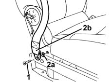
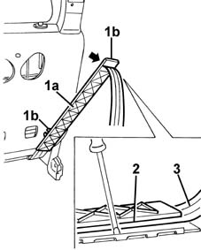
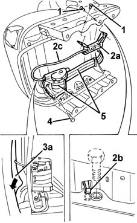
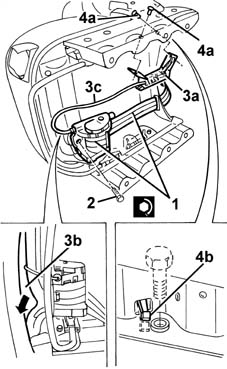

7065A40 seat belt for central front seat belt r r
- Path
- Procedures > 70 FITTINGS > 7065 SEAT BELTS AND ACCESSORIES > 7065A FRONT SEAT BELTS > 7065A40 seat belt for central front seat belt r r
- Kind
- repair procedure (removal / refitting; the operation number is the code)
- Applies to
- all engines; all production periods
- Interactive page
- https://sloeber94.github.io/elrnDB-fMltpl/en/#/2892277
Applies to: all engines; all production periods
Applies to: all engines; all production periods
 Removing
Removing
 Refitting
Refitting7045A10 l/h or r/h front seat (one) - r+r (right and left)
7045A02 central front seat - r r
7045A09 front central seat squab oddment holder - r r
7045A45 central front seat guard (1) - r r (right side)
1. Undo the bolt.
2. Remove the retainer (2a) and remove the bolt from the end of the seat belt (2b).

Applies to: all engines; all production periods
1. Remove the intermediate linkage top guard.
2. Remove the bottom guard.
3. Remove the rivet using a drill.
4. Disengage the retaining clip.
5. Remove the pin.
6. Wtihdraw the intermediate linkage guide.
7. Recover the intermediate linkage run.
Applies to: all engines; all production periods
1. Remove the seat belt rear guide (1a) after releasing it from the retainers (1b).
2. Open the guide, releasing it from the side retainers.
3. Withdraw the seat belt from the guide.

Applies to: all engines; all production periods
1. Remove the rivets using a drill.
2. Recover the mechanical sensor (2a) after disengaging its arming lever (2b).
3. Withdraw the mechanical sensor from the seat frame, passing it near the front area (3a).
4. Undo the bolt.
5. Recover the seat belt complete with pretensioner.

Applies to: all engines; all production periods
Refitting
Removing1. Refit the pretensioner in its seating, taking care to fit the centring pin correctly.
2. Tighten the bolt to the specified torque.
 | Fastening | Component | Ø | Value (daNm) |
|---|---|---|---|---|
2 | Bolt | CENTRE FRONT SEAT BELT PRETENSIONER. | - | 40 |
3. Fit the mechanical sensor (3a) in the seat frame, passing it near the front area (3b).
4. Fit the mechanical sensor and secure it with the rivets (4a).
Check that the arming lever is positioned correctly (4b).

Applies to: all engines; all production periods
Fit the seat belt in the rear guide and close the guide, engaging its side retainers.
Fit the rear guide in its seating and engage its retainers.
Fit the intermediate linkage run and guide and fix them with the pin and retainng clip.
Rivet the intermediate linkage in place.
Fit the intermediate linkage bottom guard and top guard.
Fit the seat belt correctly in the intermediate linkage.
1. Fit the end of the seat belt.
2. Insert the bolt (2a) in its seating, and fit the retainer (2b).
3. Tighten the bolt to the specified torque.
| Fastening | Component | Ø | Value (daNm) |
|---|---|---|---|---|
3 | Bolt | CENTRE FRONT SEAT BELT MOUNTING ROD. | - | 40 |
7045A45 central front seat guard (1) - r r (right side)
7045A09 front central seat squab oddment holder - r r
7045A02 central front seat - r r
7045A10 l/h or r/h front seat (one) - r+r (right and left)